Sun Web Application Guidelines - Version 4.1
Sun Web Application Guidelines - Version 4.1
|
|
|
How To Use These Guidelines - An Introduction
4.1.2 User Name, Current Role, and Management Server
4.1.6 Sun Company Name in Masthead Footer
The masthead offers access to global actions and information. It is also a core element of the brand presentation, due to both its
location on the page and its predominance throughout the application.
A primary or secondary-content page in a main window contains a masthead that
is called a "main window masthead." A secondary-content page in a
pop-up window contains a different, pared-down masthead called a "pop-up
window masthead."
 Use the main window masthead in all main windows for browser-based Sun applications.
Use the main window masthead in all main windows for browser-based Sun applications.
The standard main window masthead is illustrated below:
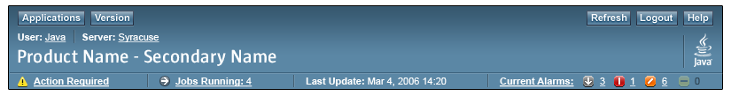
 Include the following elements in the main window masthead:
Include the following elements in the main window masthead:
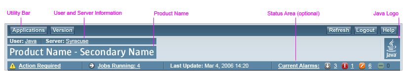
Without the optional Status Area, the masthead appears as follows:
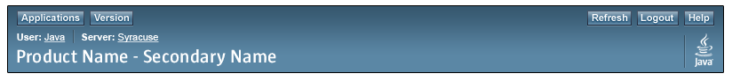
 Include the utility bar in the main window masthead.
Include the utility bar in the main window masthead.
 Make the buttons in the utility bar of the main window masthead globally applicable
and available to most or every page displayed in the main browser window.
Make the buttons in the utility bar of the main window masthead globally applicable
and available to most or every page displayed in the main browser window.
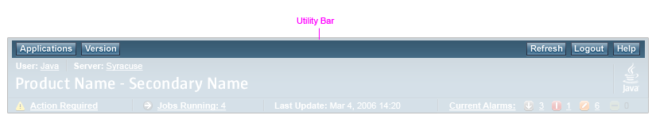
Display global utility bar buttons in the utility bar. These are buttons which appear in most or all applications, and are applicable regardless of the particular application page being displayed. Some examples include Log Out and Help.
 Render buttons in two groups, a left group and a right group.
Render buttons in two groups, a left group and a right group.
 Provide Applications, Version, Log Out, and Help buttons. However, note that Applications is only required for products that can be opened from a console application (an application that enables users to launch other applications and may provide other services). Also, Log Out is only required for applications which require users to log in.
Provide Applications, Version, Log Out, and Help buttons. However, note that Applications is only required for products that can be opened from a console application (an application that enables users to launch other applications and may provide other services). Also, Log Out is only required for applications which require users to log in.
 Place Applications and Version buttons in the left group.
Place the Version button to the right of the Applications button.
Place Applications and Version buttons in the left group.
Place the Version button to the right of the Applications button.
 Place Log Out and Help buttons in the right group. Place
the Help button to the right of the Log Out button.
Place Log Out and Help buttons in the right group. Place
the Help button to the right of the Log Out button.
You may also provide up to four additional application-specific custom buttons, such as Refresh and Preferences, in the right group, placed to the left of the Log Out button. See 1.4 Resources for Application Designers to determine the approvals required for doing this.
 Give buttons the following tool tips, using headline capitalization
(see
2.5 Text Capitalization):
Give buttons the following tool tips, using headline capitalization
(see
2.5 Text Capitalization):
 If providing global quick search (see 12.1.1
Global Quick Search), display
the search elements in the utility bar as illustrated here:
If providing global quick search (see 12.1.1
Global Quick Search), display
the search elements in the utility bar as illustrated here:
The display of user and management server information is optional, depending on the particular application.
The user name identifies the name of the user who is logged in.
 If your application displays the user and management server information place them in the product name area of the main window masthead.
If your application displays the user and management server information place them in the product name area of the main window masthead.
 If displayed, user information must appear at the top of the product name area as described in this section.
If displayed, user information must appear at the top of the product name area as described in this section.
 Display the user name after the label "User:" (for example, "User: username").
Display the user name after the label "User:" (for example, "User: username").
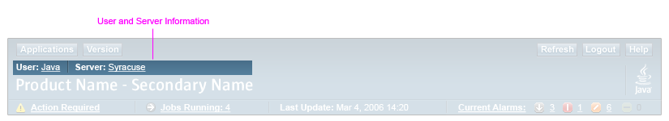
In some situations, applications require Role-based Access Control which requires that the user log in with both a user name and a role name.
 When the user logs in with both a user name and a role, display the label as "Role (User):". Then display the role name first, followed by the user name in parenthesis as shown here: "Role (User): role (username)". Both pieces of information must be shown if any user information is shown. The role name is displayed first because the role, when used, determines available permissions.
When the user logs in with both a user name and a role, display the label as "Role (User):". Then display the role name first, followed by the user name in parenthesis as shown here: "Role (User): role (username)". Both pieces of information must be shown if any user information is shown. The role name is displayed first because the role, when used, determines available permissions.
The following image shows both user information (where the user logged in with both a user name, root, and a role, admin) and management server information. The user information has been made a link, which is an option discussed in more detail later in this section.
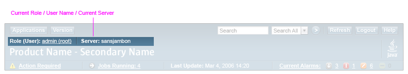
Optionally make the user information (role and user name or just user name, as appropriate) a link, if additional information or options may be needed by the user of the application. The behavior that results when a user clicks on the user information is application-specific. See 1.4 Resources for Application Designers to determine the approvals required for doing this.
 If the user information is made to be a link, display it as underlined, as shown in the above image, by using the appropriate stylesheet style.
If the user information is made to be a link, display it as underlined, as shown in the above image, by using the appropriate stylesheet style.
 Include
the product name in the main window masthead.
Include
the product name in the main window masthead.
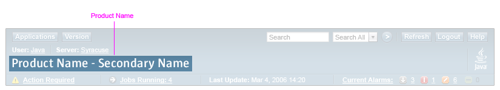
 Display
the product name using an image, not text.
Display
the product name using an image, not text.
 Display
the product name text using headline capitalization (see 2.5
Text Capitalization).
Display
the product name text using headline capitalization (see 2.5
Text Capitalization).
Sometimes an application needs to identify both the name of a suite of
products, and a specific application name. In this case, use a two-part product name, where the first part indicates the suite name, and the second part indicates the specific application name.
Separate the two parts using a dash, considering the dash to be part of the suite name. Both parts are displayed on one line.
If your product name does not fit onto one line, see 1.4 Resources for Application Designers.
 Refer to Appendix C, Product Name Images for information on creating product name images.
Refer to Appendix C, Product Name Images for information on creating product name images.
 Use the status area in the main window masthead for application-specific purposes as described in this section. The status area may also be used for other application-specific purposes, if necessary. See 1.4 Resources for Application Designers to determine the approvals required for doing this.
Use the status area in the main window masthead for application-specific purposes as described in this section. The status area may also be used for other application-specific purposes, if necessary. See 1.4 Resources for Application Designers to determine the approvals required for doing this.
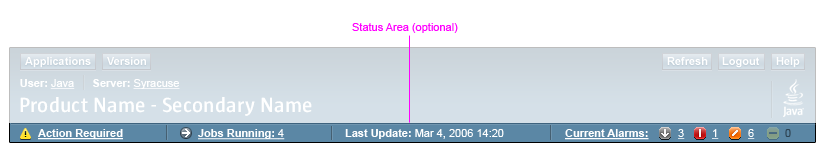
The status area is available for application-specific uses only. Every application has a unique set of requirements for the use of this area. Currently, only the following items are designed to appear in the status area, in this order:
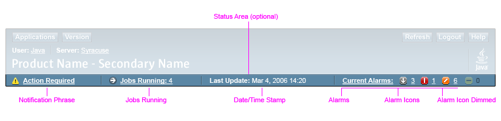
 Use of the status area to display application-specific information is optional. However, if used,
a maximum of four items (for example, those listed above) can be displayed.
Use of the status area to display application-specific information is optional. However, if used,
a maximum of four items (for example, those listed above) can be displayed.
 The order of the four items - notification phrase, jobs running, date/time stamp,
and alarms will always remain fixed. If there are three or fewer of these to
show, adjust the arrangement of the items as shown in the images in this section.
The order of the four items - notification phrase, jobs running, date/time stamp,
and alarms will always remain fixed. If there are three or fewer of these to
show, adjust the arrangement of the items as shown in the images in this section.
Here is an example with 2 items:
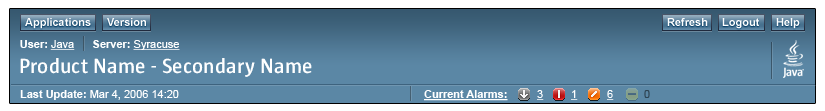
See also the 3-item example in section 4.1.1 Utility Bar.
 Use the notification phrase item to provide a short notification to users. For example, if the state of a server is such that it must be restarted, the
notification phrase can be "Restart Server."
Use the notification phrase item to provide a short notification to users. For example, if the state of a server is such that it must be restarted, the
notification phrase can be "Restart Server."
 If the notification phrase is longer than can fit in the space available for the status area, use
the phrase "Action Required." Consider the following when determining whether a more specific
phrase can fit:
If the notification phrase is longer than can fit in the space available for the status area, use
the phrase "Action Required." Consider the following when determining whether a more specific
phrase can fit:
 The notification phrase can, and often will, be a link. If the phrase identifies a specific action,
like "Restart Required", make the link go to the place where the user can take that action. If instead,
the phrase is the generic placeholder "Action Required", make the link open a popup window saying
what that action is. The pop-up window can include a link that goes to the place where the user can take
the action. If neither of these applies, do not use a link.
The notification phrase can, and often will, be a link. If the phrase identifies a specific action,
like "Restart Required", make the link go to the place where the user can take that action. If instead,
the phrase is the generic placeholder "Action Required", make the link open a popup window saying
what that action is. The pop-up window can include a link that goes to the place where the user can take
the action. If neither of these applies, do not use a link.
 Precede the notification phrase with a 16x16 pixel gif icon. The icon can
be an application-specific icon or one of the standard
alert icons (such as warning or information).
If the icon is application-specific, it needs to represent the essence of the
notification phrase. For example, if the notification phrase is indicating
an action, the icon should represent that action.
If no icon is provided, the information alert icon will be displayed by default.
Note that the icon
cannot be one of the standard alarm icons. (See Chapter 14 Alerts and Messages for details about alert icons, and 16.1.2 Alarm Severity for details about alarm icons. The actual Icons are available from 2.4.3 Icons, Glyphs, and Graphics Repository.)
Precede the notification phrase with a 16x16 pixel gif icon. The icon can
be an application-specific icon or one of the standard
alert icons (such as warning or information).
If the icon is application-specific, it needs to represent the essence of the
notification phrase. For example, if the notification phrase is indicating
an action, the icon should represent that action.
If no icon is provided, the information alert icon will be displayed by default.
Note that the icon
cannot be one of the standard alarm icons. (See Chapter 14 Alerts and Messages for details about alert icons, and 16.1.2 Alarm Severity for details about alarm icons. The actual Icons are available from 2.4.3 Icons, Glyphs, and Graphics Repository.)
 When displaying the status of running jobs in the status area, follow the guidelines in 15.5
Jobs Running Display in the Main Window Masthead in chapter 15, Progress Indicators.
When displaying the status of running jobs in the status area, follow the guidelines in 15.5
Jobs Running Display in the Main Window Masthead in chapter 15, Progress Indicators.
 When
displaying alarms in the status area, follow the guidelines
in 16.1.5.4 Alarms in the Masthead.
When
displaying alarms in the status area, follow the guidelines
in 16.1.5.4 Alarms in the Masthead.
 Always show the date/time stamp unless the alarms information or the jobs running
information could be out of sync with the date/time information (for example, the alarm or jobs running data is not updated when the page is refreshed). In that case, do not show
a date/time stamp.
Always show the date/time stamp unless the alarms information or the jobs running
information could be out of sync with the date/time information (for example, the alarm or jobs running data is not updated when the page is refreshed). In that case, do not show
a date/time stamp.
 Use the Java logo in the main window masthead for all browser-based
Sun applications.
Use the Java logo in the main window masthead for all browser-based
Sun applications.
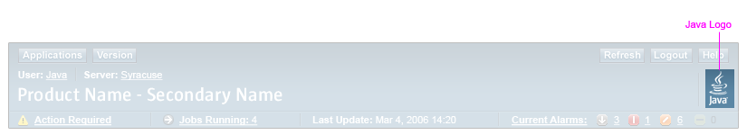
The presence of the Java logo reinforces the role of Java as the lead brand. Application teams should contact their brand representative if they are uncertain about which brand marks are appropriate for their application. For additional information on branding guidelines, see 1.4 Resources for Application Designers.The masthead footer is a shaded bar that is placed at the bottom of the content pages shown in the main browser window. It contains the Sun company name which is created as an image.
The masthead footer is placed at the bottom of the page's content. It spans the whole width of the browser window. Its width is not affected by the type of top-level navigation used on the page (see Chapter 5, Top-Level Navigation for more information).
The masthead footer is not associated with the window's border and therefore, can be scrolled out of view or may not be visible when a page is first displayed, requiring the user to scroll to the bottom of the page contents to see the masthead footer.
 Place the Sun company name image in a masthead footer and display this footer at the bottom of the content of each main browser window page for all browser-based Sun applications.
Place the Sun company name image in a masthead footer and display this footer at the bottom of the content of each main browser window page for all browser-based Sun applications.
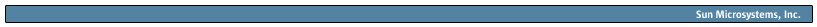
 Always include a masthead footer when a main browser window masthead is displayed.
Always include a masthead footer when a main browser window masthead is displayed.
 Never include a masthead footer without a main browser window masthead.
Never include a masthead footer without a main browser window masthead.
 Never include a masthead footer for a pop-up window.
Never include a masthead footer for a pop-up window.
 Do
not remove or alter the Sun company name under any circumstances.
Do
not remove or alter the Sun company name under any circumstances.
If using frames to display page navigation and/or content, size them such that the masthead footer containing the Sun company name is not clipped by the frame edge or border.
 Use the pop-up window masthead for all pages appearing in pop-up windows.
Use the pop-up window masthead for all pages appearing in pop-up windows.
Secondary-content pages are narrow-purpose pages used in support of the application's primary-content pages. Secondary-content pages may appear in main windows or pop-up windows.
A secondary-content page appearing in a pop-up window has a pared-down masthead that appears in the top area of the secondary-content page, optionally in its own frame. This masthead is called a "pop-up window masthead." Note that the Help and Wizard pop-up windows use a special design that doesn't include the pop-up window masthead (see 11.2 Help Window Help and 13 Wizards for more information).
The standard pop-up window masthead is illustrated below:
 Include the product name in the pop-up window masthead.
Include the product name in the pop-up window masthead.
 Include the product name in the pop-up window masthead of all browser-based
Sun applications.
Include the product name in the pop-up window masthead of all browser-based
Sun applications.
 Display the product name using an image, not text.
Display the product name using an image, not text.
 Display the product name text using headline capitalization (see 2.5
Text Capitalization).
Display the product name text using headline capitalization (see 2.5
Text Capitalization).
 Refer to Appendix
C, Product Name Images for information on creating product name images.
Refer to Appendix
C, Product Name Images for information on creating product name images.
| Privacy Policy | Terms of Use | Trademarks | Copyright 2007 Sun Microsystems, Inc. |